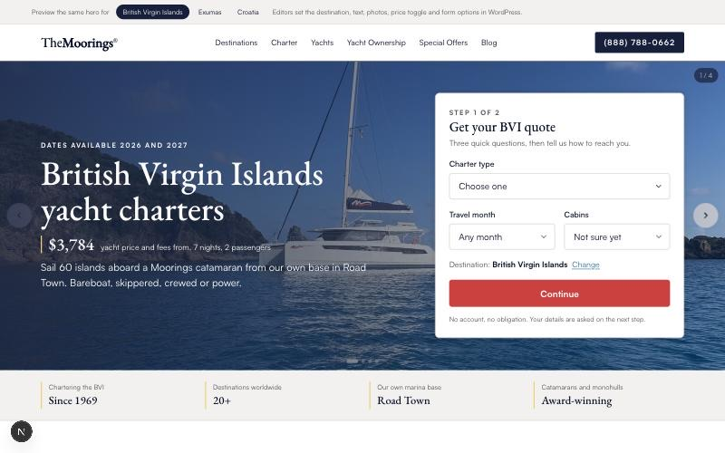

Rahul Jha
Product Design Engineer
I design booking products in code and build the tools my team designs with. The only designer on four travel brands at Travelopia, and the co-founder of Project 831, a sports venue that runs on software I built. I care about the states nobody designs, and about a component that does not lie about the design.
Reach me by email, see my code on GitHub, or find me on LinkedIn. Bengaluru, working remotely.
Work
 Court booking on coss uiA venue's booking product on Cal.com's design system, with headless primitives of my own
Court booking on coss uiA venue's booking product on Cal.com's design system, with headless primitives of my own Build My QuotePrice the stay, not the date: a charter calendar, eleven variants, in user testing
Build My QuotePrice the stay, not the date: a charter calendar, eleven variants, in user testing HelixThe design-system workspace ten brand teams use instead of Figma
HelixThe design-system workspace ten brand teams use instead of Figma Le Boat checkoutA checkout rebuilt around the decision, and fifteen ways a booking breaks
Le Boat checkoutA checkout rebuilt around the decision, and fifteen ways a booking breaks Project 831The venue I co-founded, on a booking engine I built: WhatsApp, web, desk
Project 831The venue I co-founded, on a booking engine I built: WhatsApp, web, desk The captainA crew of agents that does my solo work; a gate in code means only I decide
The captainA crew of agents that does my solo work; a gate in code means only I decide
Growth designHow I run a growth ticket, as one Claude Code skill; its first run shipped BiteSpeedThe only designer at a funded startup; later, its AI Marketing Agent end to end
BiteSpeedThe only designer at a funded startup; later, its AI Marketing Agent end to end
Each page is the short version. The full write-up, as I made it, is linked at the end of each one, and all of it is on the work page.
Writing
- How I buildMethod
- A calendar locale fix, merged into coss uiDesign systems
- Staff Mode: the desk stopped doing mathsProject 831
- Fifteen ways a booking breaksCheckout
Learnings
Short reads from running a venue on software we wrote. One entry per failure, written the week it happens.
Now
Porting a month grid, viewer-zone marks and a clock-change preview into the coss ui build. A second coss ui pull request, on dark muted-text contrast, is next.